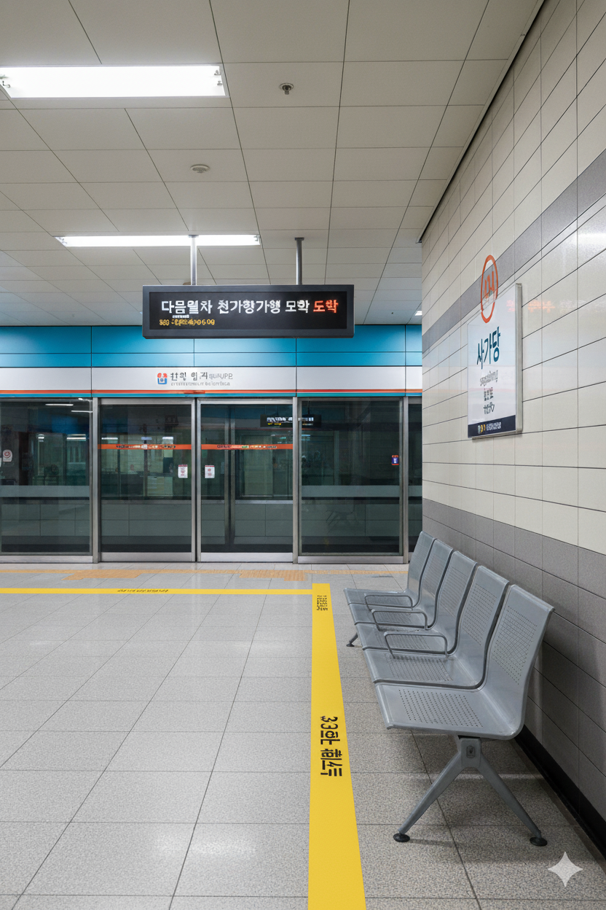

사가당역
1. 개요
효빈 도시철도 3호선 307번 및 효빈 도시철도 4호선 414번. 효빈광역시 동구 사가당동 689-1지하 소재이다.
2. 역 정보
효빈광역시 동구 사가당동에 위치한 환승역이다. 3호선과 4호선이 십자(+) 형태로 교차하며, 환승 동선이 비교적 짧고 효율적이다. 역 내부에 **3, 4호선 통합 유실물 센터**가 위치해 있어 분실물을 찾으러 오는 시민들의 발길이 잦은 곳이기도 하다. 동구청, 대형 마트, 영화관 등이 밀집한 동구 최대 번화가인 사가당동의 중심에 있어 항시 붐비는 역이다.
3. 역 주변 정보
3.1. 출구 정보
|
3
4
사가당역 출구 정보
|
||
|---|---|---|
| 번호 | 주요 시설 및 방향 | 비고 |
| 1 | 사가당 현대아파트 2차 | |
| 2 | 사가당주공2차아파트, 모산초등학교 | |
| 3 | 사가당 현대아파트 2차 | |
| 4 | 덕현중학교 | |
| 5 | 사가당 주공1차아파트 | |
| 6 | 사가당주공2차아파트, 모산초등학교 | |
4. 일평균 이용객
| 사가당역 이용객 통계 | ||||
|---|---|---|---|---|
| 연도 | 3호선 | 4호선 | 총합 | 비고 |
| 2020년 | 8,952명 | 8,454명 | 17,406명 | |
| 2021년 | 9,043명 | 8,540명 | 17,583명 | |
| 2022년 | 10,896명 | 10,290명 | 21,186명 | |
| 2023년 | 11,088명 | 10,471명 | 21,559명 | |
| 2024년 | 11,283명 | 10,655명 | 21,938명 | |
5. 승강장
3호선

3호선 승강장 전경
| 청 엽 ↑ | |||
| 하 | ㅣ | ㅣ | 상 |
| ↓ 덕 현 | |||
| 상 | 3 효빈 도시철도 3호선 | 팔조 방면 |
| 하 | 3 효빈 도시철도 3호선 | 효빈국제공항 방면 |
4호선

4호선 승강장 전경
| 가동사거리 ↑ | |||
| 하 | ㅣ | ㅣ | 상 |
| ↓ 동덕현 | |||
| 상 | 4 효빈 도시철도 4호선 | 해운산업지구 방면 |
| 하 | 4 효빈 도시철도 4호선 | 천가 방면 |
6. 연계 교통
효빈광역시 시내버스 노선들이 주로 정차한다.
| 구분 | 정류소명 | 노선 번호 |
|---|---|---|
| 순방향 | 사가당역 | 4, 18, 151, 371, 1000, 1111 |
| 역방향 | 사가당역(건너편) | 04-1, 81, 511, 371, 1000R, 1111R |
7. 기타
- 동구의 중심, 황금과 주황의 교차로: 사가당역은 동구 최대의 번화가인 사가당동에 위치한 3호선(노란색)과 4호선(주황색)의 환승역이다. 역사 내부는 노선색을 반영하여 따뜻하고 밝은 난색 계열로 꾸며져 있어 이용객들에게 활기찬 인상을 준다.
-
동구의 관문:
- - 3호선: 효빈국제공항과 창전구(모르포니카 성지)를 잇는 핵심 노선으로, 공항 이용객들의 필수 코스다.
- - 4호선: 안천구(헬로해피/선샤인 성지)와 남구(산업단지)를 연결하는 남북 축이다.
- '사가당(Sagadang)'의 의미와 상권: 역명인 '사가당'은 동구의 행정 중심지이자 상업 지구인 사가당동에서 유래했다. 역 이름이 독특해서 타지 사람들은 **"사탕가게냐"**며 재미있어하기도 한다. 실제로 역 근처에 디저트 카페가 많긴 하다. 역 주변은 동구청과 대형 마트, 영화관 등이 밀집해 있어 밤낮없이 붐비며, 환승 유동 인구 덕분에 역세권 상권이 매우 발달해 있다.
- 숨은 덕질 포인트: 역 인근에 대형 서점과 음반 매장이 있어, 3호선을 타고 공항에서 막 도착한 외국인 팬들이나 4호선을 타고 온 남부권 팬들이 신간이나 앨범을 사러 자주 들른다. 역사 내 광고판에는 아이돌 생일 축하 광고가 자주 걸리기로 유명하다.